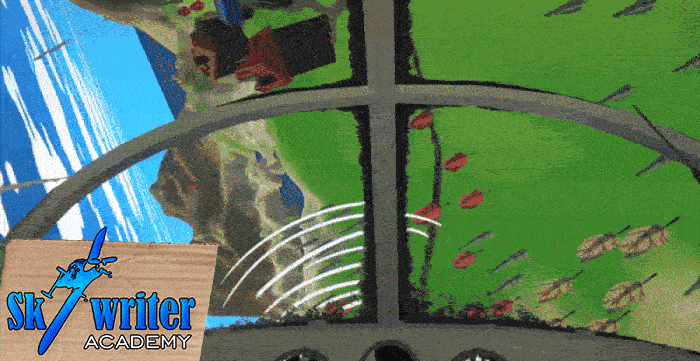

Skywriter Academy

Skywriter Academy is a difficult 3D flight sim game.
We gathered together a team of 4 people, called team Trash Pilots.
For programming Bart van Egten and me.
For art Ties Groen.
And for sound Nik Buchowski.
In the game you fly a semi realistic plane and write in the sky with smoke.
I mostly worked on the scoring system and live feed view in the cockpit. Also worked on the game loop and start menu.
The game did not achieve as high of a score as we had hoped. But it did get quite some plays. Even reaching the top 100 in popular at some point. The artist did a great job! Also very proud of our programmer for managing to get a semi realistic flight sim working. And of course our composer also did a killer job on the sound track. Even going out of his way to make different music for the different radio channels.
One lesson I take away from this jam, is that it's not good to make a very difficult game. People play for max 5-10 min, so it's a hard ask to have them learning to fly a plane in such a short time. Let alone try to write a pattern at the same time xD. This also explains why "Enjoyment" is our lowest score. We also had some unfortunate issues with Wwise causing audio issues. Lowering the audio score dramatically. A lesson learned here is that it is not a good idea to use audio middleware for a jam when no programmer has much experience with it.
The game was made for the GMTK game jam 2025 in 96 hours. The theme was "Loop". The game was 1447th overall out of 9586 entries, which is in the top 15%. Made in Unity.